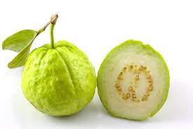

Thai Guavas are generally the size of a softball with apple green skin that can range from bumpy to smooth. The flesh is white with pale yellow seeds and tends to be drier than the pink type of guavas. Thai guavas are only mildly sweet and have very little fragrance. The crunchy flesh and hard seeds are both edible.
